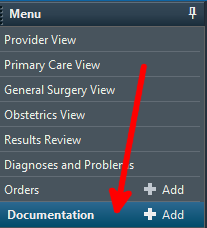
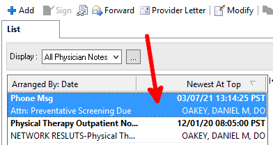
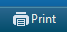
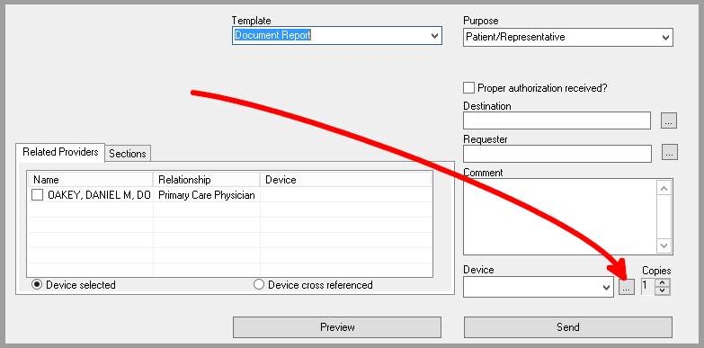
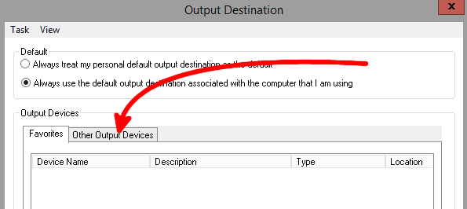
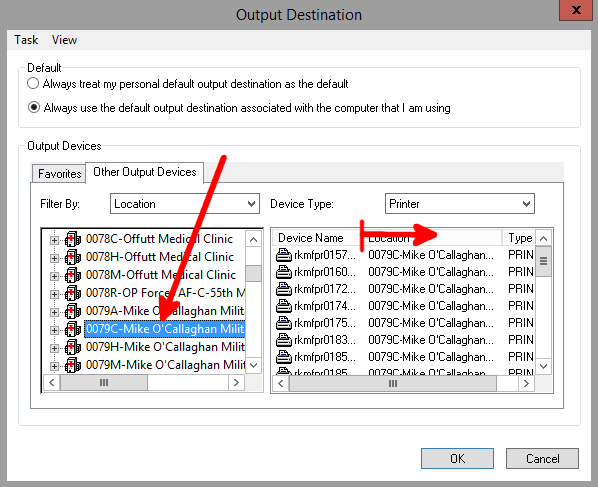
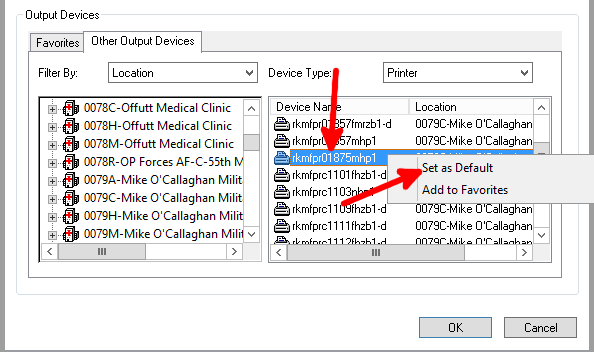
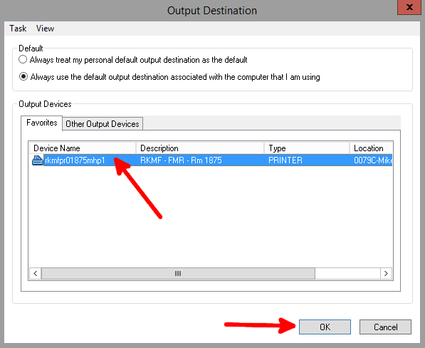
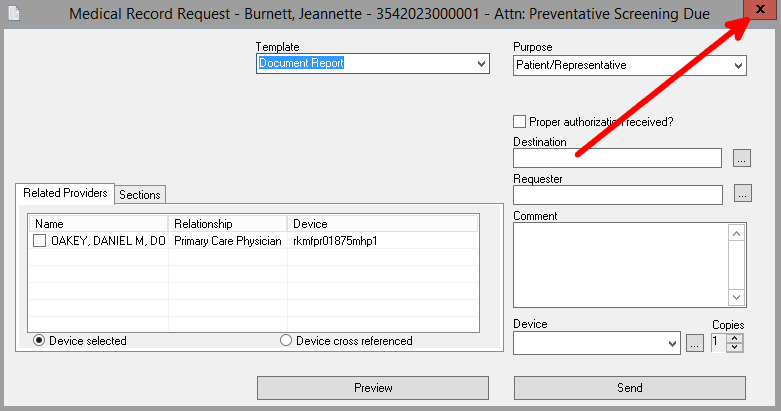
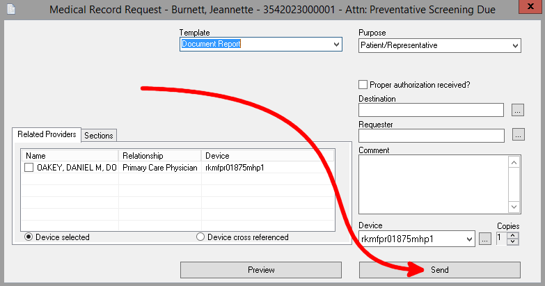

Go to the documentation section for a patient and open a note that you would like to print.


Click the print button

In the pop-up, click the "..."


Search for "0079C-Mike'Ocallaghan Military Medical Center
Expand the "Device Name" column

Right-click on the desired printer and set as default. Then click "OK"

Left click on the printer and click "OK".

Close and re-open the print dialogue to reset the default printer


To get a new printer added to Cerner, you'll need to submit a ticket. Include the following information: